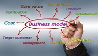

We know how important your dream business is to you. Therefore, we‘ve come up with an all in one guide: The Startup Process to help you turn your vision into reality.
One of the most critical elements of any sustainable business is achieving a positive cash-flow. Without that, even the best intentions will fail. By Martin Zwilling Founder and CEO, Startup Professionals I was mentoring some graduate students at a local university recently, and I sensed that profit seems to be a dirty word these days to many aspiring entrepreneurs. I'm certainly not a fan of customer rip-offs, but even non-profits have to be cash-flow positive, or have deep pockets, to help anyone for long. Every business needs to develop a revenue model even before a product. The alternatives range from giving the product away for free (revenue from ads), to pricing based on costs, to charging what the market will bear (premium pricing). The implications of the decision you make are huge, including brand image, funding requirements, and long-term business viability. It's naïve to think you can sell below costs, and make it up by attracting more customers. This may seem like Business Fundamentals 101, but the market changes rapidly, so I thought it might be useful to share what I see as the most common revenue models being used by businesses today. As an experienced business advisor, here is my current summary, with some of the pros and cons or special considerations for each:
This is the most common model used by online businesses and apps today, the so-called Facebook model, where your service is free, and the revenue comes from advertising. The challenge is to get the first million customers, before advertisers will sign up. Facebook spent $150 million getting started.
In this variation on the free model, used by LinkedIn and many other online and app offerings, the basic function is free, but premium services are only available for an additional fee. This also requires a base critical mass, and real work to differentiate and convert users to paying customers.
In this more traditional product pricing model, the price is set at two to five times the product cost to cover overhead and operational expenses. If your product is a commodity, the margin may be as thin as ten percent. Use it when your new technology gives you a tremendous cost improvement.
If you can quantify a large value or cost savings to the customer, greater than your cost, charge a price commensurate with the value delivered. This doesn't work well with "nice to have" an offering, like social networks, but does work for new drugs and medical devices that solve critical health problems.
This is a very popular model today for Internet services, with monthly or yearly payments, in lieu of one higher up-front price. Advantages for your business include a stable revenue stream, customer retention, and increasing customer investment over time. The customer advantage is a lower entry cost.
In product environments, where an enterprise product may have one user or hundreds of thousands, a common approach is to price by user ranges, or volume usage limits. Keep the number of tiers small for manageability. This approach doesn't typically apply to consumer products and services.
This is another popular model for platforms, e-commerce, and affiliates, where you as the transaction or product provider get a small percentage or royalty on every ultimate sale to customers by others. Amazon led the way on this one online, but distributors have long used this model in retail
In this model, the product price is attractive or free, but the customers are charged for installation, customization, training and other services. This model is good for getting your foot in the door, but it is basically a services business with the product as a marketing cost. Customers generally dislike this model.
This approach works if your product can be configured "bare-bones" for a low price, and additional features priced separately. It is a very competitive approach, but requires design and development effort for value at every level. Expect extra costs for development, testing, documentation, and support.
With this model, popularly called the razor-blade model, the base unit is often sold below cost, with the anticipation of ongoing revenue from expensive supplies. Today, think cheap printers with expensive ink cartridges. This is another model that requires deep pockets to start, so be careful. If you don't like any of these models, you can always try the non-revenue model, sometimes called the Twitter model, where you count on investors to sustain your costs while your valuation increases exponentially based on millions of customers. The nonprofit version of this is a service so valuable and recognized, like UNICEF, that you never run out of donors and philanthropists. Yet smart people don't count on being one of these, and have a plan to validate their business model, concurrent with their plan to validate their solution. Certainly you shouldn't be afraid of using the word "profit" in your discussions with a business advisor, potential investors, partners, and even customers. A reasonable profit will make your idea a reality for all, rather than a dream.
Difference between business plan and business model. The business model is the mechanism through which the company generates its profit while the business plan is a document presenting the company's strategy and expected financial performance for the years to come.
Business plan and business model are 2 completely different notions. What's the difference between the 2?
The business model is the mechanism through which the company generates its profit while the business plan is a document presenting the company's strategy and expected financial performance for the years to come. As you can see, the business model is at the center of the business plan. The business model describes how the company is positioned within its industry's value chain, and how it organizes its relations with its suppliers, clients, and partners in order to generate profits. The business plan translates this positioning in a series of strategic actions and quantifies their financial impact.
Here are some examples of the most common business models:
Let's dive in to these examples in greater details.
It's the most basic business model, the company sales the products and services it produces. In order for that business model to be viable, the company needs to generate enough sales to cover its production, distribution, and storage costs.
Here the goal is to generate revenues by selling advertising space. On the Internet this model can be segmented based on the type of advertising:
This business model is already slightly more complex than the production one given that the company first need to invest in order to create a large audience before it can attract advertisers.
The company acts as an intermediary between the seller and the buyer and takes a cut of every sell it helps generate. This business model is generally less risky than the 2 previous ones (and therefore less profitable) as the level of investment required can be minimal.
The company receives revenues from its subscribers at regular intervals. This business model has one clear advantage: the company knows in advance how much revenues it is going to generate. The flip side is that it often takes several months to recover the subscriber acquisition costs leading to a lower cash generation at the beginning of the cycle.
The company offers 2 versions of its product. A free version with a limited set of features which goals are either to raise awareness about the product or to create a network effect. And a paid version, comprising more features, from which it can generate enough margin to cover the cost of the free users. The keys to success with this business model are to be able to generate huge network effect (example: LinkedIn) and/or to convert a sufficient number of free users into paid customers (example: Uservoice).
The company offers one product for free or at a price close to its production cost and generates a profit on the sale of accessories. The classic example of this business model is the sale of razor blades: razors are sold for nothing but you have to continually buy expensive blades to be able to use it. These lists of business models is far from being exhaustive, and if you have questions regarding a business model in particular feel free to ask it using the comment form below.